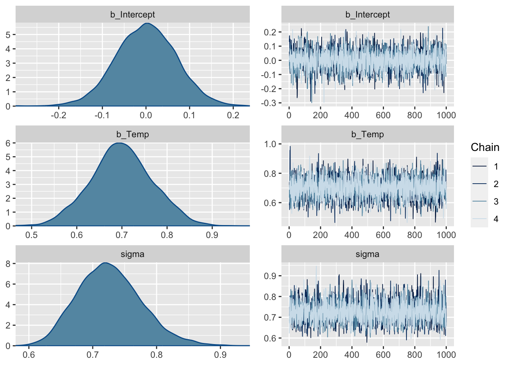
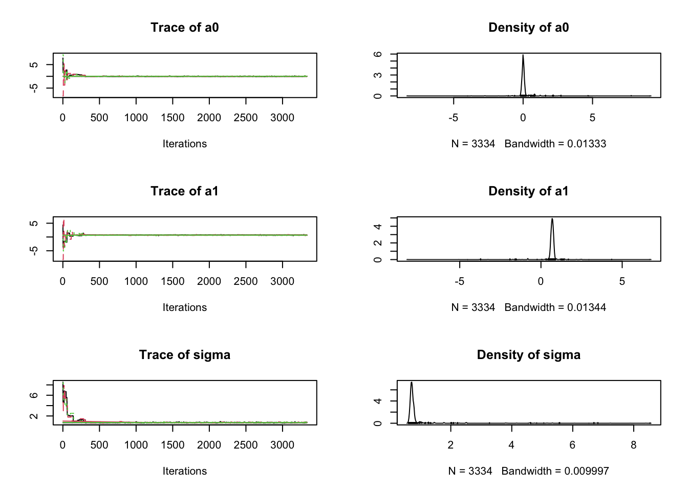
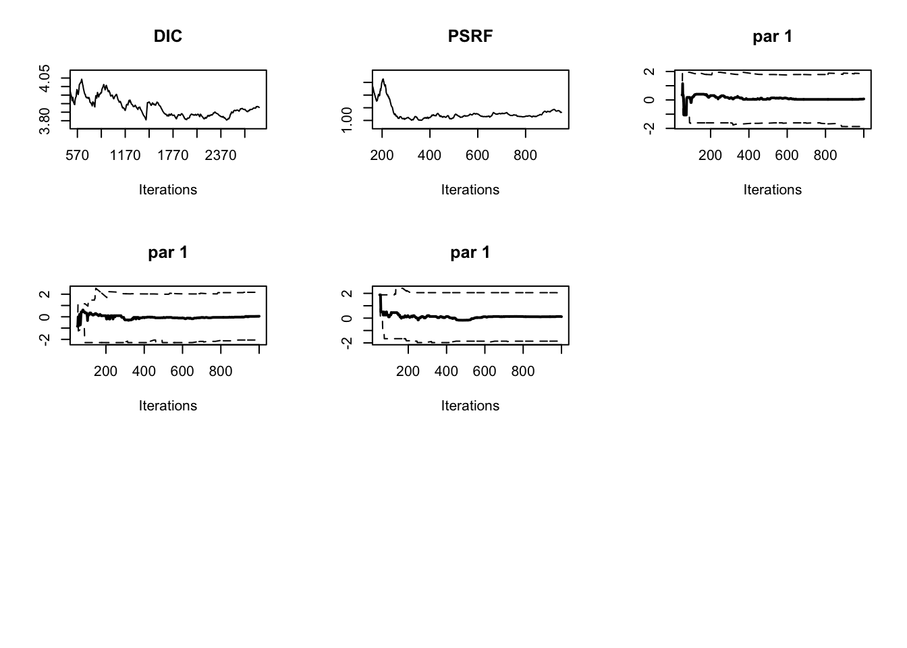

airqualityCleaned = airquality[complete.cases(airquality),]
airqualityCleaned = data.frame(scale(airqualityCleaned))
plot(Ozone ~ Temp, data = airqualityCleaned)
We will use the dataset airquality, just removing NAs and scaling all variables for convenience
airqualityCleaned = airquality[complete.cases(airquality),]
airqualityCleaned = data.frame(scale(airqualityCleaned))
plot(Ozone ~ Temp, data = airqualityCleaned)
fit <- lm(Ozone ~ Temp, data = airqualityCleaned)
summary(fit)
Call:
lm(formula = Ozone ~ Temp, data = airqualityCleaned)
Residuals:
Min 1Q Median 3Q Max
-1.2298 -0.5247 -0.0263 0.3138 3.5485
Coefficients:
Estimate Std. Error t value Pr(>|t|)
(Intercept) 1.232e-17 6.823e-02 0.00 1
Temp 6.985e-01 6.854e-02 10.19 <2e-16 ***
---
Signif. codes: 0 '***' 0.001 '**' 0.01 '*' 0.05 '.' 0.1 ' ' 1
Residual standard error: 0.7188 on 109 degrees of freedom
Multiple R-squared: 0.488, Adjusted R-squared: 0.4833
F-statistic: 103.9 on 1 and 109 DF, p-value: < 2.2e-16library(effects)
plot(allEffects(fit, partial.residuals = T))par(mfrow = c(2,2))
plot(fit) # residualssummary(fit) Family: gaussian
Links: mu = identity; sigma = identity
Formula: Ozone ~ Temp
Data: airqualityCleaned (Number of observations: 111)
Draws: 4 chains, each with iter = 2000; warmup = 1000; thin = 1;
total post-warmup draws = 4000
Population-Level Effects:
Estimate Est.Error l-95% CI u-95% CI Rhat Bulk_ESS Tail_ESS
Intercept 0.00 0.07 -0.14 0.13 1.00 4136 2786
Temp 0.70 0.07 0.57 0.83 1.00 3909 2857
Family Specific Parameters:
Estimate Est.Error l-95% CI u-95% CI Rhat Bulk_ESS Tail_ESS
sigma 0.73 0.05 0.64 0.83 1.00 3934 3145
Draws were sampled using sampling(NUTS). For each parameter, Bulk_ESS
and Tail_ESS are effective sample size measures, and Rhat is the potential
scale reduction factor on split chains (at convergence, Rhat = 1).plot(fit, ask = FALSE)
plot(conditional_effects(fit), ask = FALSE)fit$model # model that is actually fit via // generated with brms 2.17.0
functions {
}
data {
int<lower=1> N; // total number of observations
vector[N] Y; // response variable
int<lower=1> K; // number of population-level effects
matrix[N, K] X; // population-level design matrix
int prior_only; // should the likelihood be ignored?
}
transformed data {
int Kc = K - 1;
matrix[N, Kc] Xc; // centered version of X without an intercept
vector[Kc] means_X; // column means of X before centering
for (i in 2:K) {
means_X[i - 1] = mean(X[, i]);
Xc[, i - 1] = X[, i] - means_X[i - 1];
}
}
parameters {
vector[Kc] b; // population-level effects
real Intercept; // temporary intercept for centered predictors
real<lower=0> sigma; // dispersion parameter
}
transformed parameters {
real lprior = 0; // prior contributions to the log posterior
lprior += student_t_lpdf(Intercept | 3, -0.3, 2.5);
lprior += student_t_lpdf(sigma | 3, 0, 2.5)
- 1 * student_t_lccdf(0 | 3, 0, 2.5);
}
model {
// likelihood including constants
if (!prior_only) {
target += normal_id_glm_lpdf(Y | Xc, Intercept, b, sigma);
}
// priors including constants
target += lprior;
}
generated quantities {
// actual population-level intercept
real b_Intercept = Intercept - dot_product(means_X, b);
}pp_check(fit) # residual checksUsing 10 posterior draws for ppc type 'dens_overlay' by default.The general approach in JAGS is to
library(rjags)Loading required package: codaLinked to JAGS 4.3.0Loaded modules: basemod,bugsData = list(y = airqualityCleaned$Ozone, x = airqualityCleaned$Temp, nobs = nrow(airqualityCleaned))
modelCode = "
model{
# Likelihood
for(i in 1:nobs){
mu[i] <- a*x[i]+ b
y[i] ~ dnorm(mu[i],tau) # dnorm in jags parameterizes via precision = 1/sd^2
}
# Prior distributions
# For location parameters, normal choice is wide normal
a ~ dnorm(0,0.0001)
b ~ dnorm(0,0.0001)
# For scale parameters, normal choice is decaying
tau ~ dgamma(0.001, 0.001)
sigma <- 1/sqrt(tau) # this line is optional, just in case you want to observe sigma or set sigma (e.g. for inits)
}
"
# Specify a function to generate inital values for the parameters
# (optional, if not provided, will start with the mean of the prior )
inits.fn <- function() list(a = rnorm(1), b = rnorm(1), tau = 1/runif(1,1,100))
# sets up the model
jagsModel <- jags.model(file= textConnection(modelCode), data=Data, init = inits.fn, n.chains = 3)Compiling model graph
Resolving undeclared variables
Allocating nodes
Graph information:
Observed stochastic nodes: 111
Unobserved stochastic nodes: 3
Total graph size: 310
Initializing model# MCMC sample from model
Samples <- coda.samples(jagsModel, variable.names = c("a","b","sigma"), n.iter = 5000)
# Plot the mcmc chain and the posterior sample
plot(Samples)
summary(Samples)
Iterations = 1:5000
Thinning interval = 1
Number of chains = 3
Sample size per chain = 5000
1. Empirical mean and standard deviation for each variable,
plus standard error of the mean:
Mean SD Naive SE Time-series SE
a 0.6988488 0.07018 0.0005730 0.0005730
b -0.0003132 0.06955 0.0005679 0.0005686
sigma 0.7236756 0.05045 0.0004119 0.0004207
2. Quantiles for each variable:
2.5% 25% 50% 75% 97.5%
a 0.5644 0.65166 0.6986695 0.74565 0.8336
b -0.1348 -0.04608 -0.0005909 0.04613 0.1320
sigma 0.6347 0.68925 0.7206348 0.75509 0.8267Approach is identical to JAGS just that we have to define all variables in the section data
library(rstan)
stanmodelcode <- "
data {
int<lower=0> N;
vector[N] x;
vector[N] y;
}
parameters {
real alpha;
real beta;
real<lower=0> sigma;
}
model {
y ~ normal(alpha + beta * x, sigma);
}
"
dat = list(y = airqualityCleaned$Ozone, x = airqualityCleaned$Temp, N = nrow(airqualityCleaned))
fit <- stan(model_code = stanmodelcode, model_name = "example",
data = dat, iter = 2012, chains = 3, verbose = TRUE,
sample_file = file.path(tempdir(), 'norm.csv')) print(fit)Inference for Stan model: example.
3 chains, each with iter=2012; warmup=1006; thin=1;
post-warmup draws per chain=1006, total post-warmup draws=3018.
mean se_mean sd 2.5% 25% 50% 75% 97.5% n_eff Rhat
alpha 0.00 0.00 0.07 -0.14 -0.05 0.00 0.05 0.13 2991 1
beta 0.70 0.00 0.07 0.56 0.65 0.70 0.75 0.84 2480 1
sigma 0.73 0.00 0.05 0.63 0.69 0.73 0.76 0.84 2186 1
lp__ -19.74 0.03 1.26 -23.00 -20.30 -19.44 -18.82 -18.30 1526 1
Samples were drawn using NUTS(diag_e) at Sun Mar 3 22:00:42 2024.
For each parameter, n_eff is a crude measure of effective sample size,
and Rhat is the potential scale reduction factor on split chains (at
convergence, Rhat=1).plot(fit)ci_level: 0.8 (80% intervals)outer_level: 0.95 (95% intervals)rstan::traceplot(fit)Here, we don’t use a model specification language, but just write out the likelihood as an standard R function. The same can be done for the prior. For simplicity, in this case I just used flat priors using the lower / upper arguments.
library(BayesianTools)
likelihood <- function(par){
a0 = par[1]
a1 = par[2]
sigma <- par[3]
logLikel = sum(dnorm(a0 + a1 * airqualityCleaned$Temp - airqualityCleaned$Ozone , sd = sigma, log = T))
return(logLikel)
}
setup <- createBayesianSetup(likelihood = likelihood, lower = c(-10,-10,0.01), upper = c(10,10,10), names = c("a0", "a1", "sigma"))
out <- runMCMC(setup)plot(out)
summary(out, start = 1000)# # # # # # # # # # # # # # # # # # # # # # # # #
## MCMC chain summary ##
# # # # # # # # # # # # # # # # # # # # # # # # #
# MCMC sampler: DEzs
# Nr. Chains: 3
# Iterations per chain: 2335
# Rejection rate: 0.802
# Effective sample size: 354
# Runtime: 0.979 sec.
# Parameters
psf MAP 2.5% median 97.5%
a0 1.001 0.005 -0.159 0.001 0.145
a1 1.002 0.703 0.556 0.690 0.826
sigma 1.060 0.712 0.638 0.726 0.840
## DIC: 266.863
## Convergence
Gelman Rubin multivariate psrf:
Running the sampler again
Samples <- coda.samples(jagsModel, variable.names = c("a","b","sigma"), n.iter = 5000)Except for details in the syntax, the following is more or less the same for all samplers.
First thing should always be convergence checks. Visual look at the trace plots,
plot(Samples)
We want to look at
Further convergence checks should be done AFTER removing burn-in
coda::acfplot(Samples)
Formal convergence diagnostics via
coda::gelman.diag(Samples)Potential scale reduction factors:
Point est. Upper C.I.
a 1 1
b 1 1
sigma 1 1
Multivariate psrf
1coda::gelman.plot(Samples)
No fixed rule but typically people require univariate psrf < 1.05 or < 1.1 and multivariate psrf < 1.1 or 1.2
Note that the msrf rule was made for estimating the mean / median. If you want to estimate more unstable statistics, e.g. higher quantiles or other values such as the MAP or the DIC (see section on model selection), you may have to run the MCMC chain much longer to get stable outputs.
library(BayesianTools)
bayesianSetup <- createBayesianSetup(likelihood = testDensityNormal,
prior = createUniformPrior(lower = -10,
upper = 10))
out = runMCMC(bayesianSetup = bayesianSetup, settings = list(iterations = 3000))The plotDiagnostics function in package BT shows us how statistics develop over time
plotDiagnostic(out)
summary(Samples)
Iterations = 5001:10000
Thinning interval = 1
Number of chains = 3
Sample size per chain = 5000
1. Empirical mean and standard deviation for each variable,
plus standard error of the mean:
Mean SD Naive SE Time-series SE
a 0.698074 0.06903 0.0005636 0.0005821
b -0.001165 0.06950 0.0005675 0.0005688
sigma 0.724108 0.04950 0.0004041 0.0004149
2. Quantiles for each variable:
2.5% 25% 50% 75% 97.5%
a 0.5637 0.65228 0.697742 0.74404 0.8336
b -0.1366 -0.04781 -0.001844 0.04543 0.1349
sigma 0.6348 0.68989 0.721295 0.75514 0.8303Highest Posterior Density intervals
HPDinterval(Samples)[[1]]
lower upper
a 0.5632305 0.8332290
b -0.1362102 0.1352262
sigma 0.6341642 0.8274542
attr(,"Probability")
[1] 0.95
[[2]]
lower upper
a 0.5687054 0.8389581
b -0.1321442 0.1374934
sigma 0.6311211 0.8211198
attr(,"Probability")
[1] 0.95
[[3]]
lower upper
a 0.5704324 0.8376072
b -0.1332739 0.1381220
sigma 0.6278856 0.8216324
attr(,"Probability")
[1] 0.95Marginal plots show the parameter distribution (these were also created in the standard coda traceplots)
BayesianTools::marginalPlot(Samples)
Pair correlation plots show 2nd order correlations
# coda
coda::crosscorr.plot(Samples)
#BayesianTools
correlationPlot(Samples)dat = as.data.frame(Data)[,1:2]
dat = dat[order(dat$x),]
# raw data
plot(dat[,2], dat[,1])
# extract 1000 parameters from posterior from package BayesianTools
x = getSample(Samples, start = 300)
pred = x[,2] + dat[,2] %o% x[,1]
lines(dat[,2], apply(pred, 1, median))
lines(dat[,2], apply(pred, 1, quantile, probs = 0.2),
lty = 2, col = "red")
lines(dat[,2], apply(pred, 1, quantile, probs = 0.8),
lty = 2, col = "red")# alternative: plot all 1000 predictions in transparent color
plot(dat[,2], dat[,1])
for(i in 1:nrow(x)) lines(dat[,2], pred[,i], col = "#0000EE03")# important point - so far, we have plotted
# in frequentist, this is know as the confidence vs. the prediction distribution
# in the second case, we add th
pred = x[,2] + dat[,2] %o% x[,1]
for(i in 1:nrow(x)) {
pred[,i] = pred[,i] + rnorm(length(pred[,i]), 0, sd = x[i,3])
}
plot(dat[,2], dat[,1])
lines(dat[,2], apply(pred, 1, median))
lines(dat[,2], apply(pred, 1, quantile, probs = 0.2), lty = 2, col = "red")
lines(dat[,2], apply(pred, 1, quantile, probs = 0.8), lty = 2, col = "red")
#alternative plotting
polygon(x = c(dat[,2], rev(dat[,2])),
y = c(apply(pred, 1, quantile, probs = 0.2),
rev(apply(pred, 1, quantile, probs = 0.8))),
col = "#EE000020")Priors are not scale-free. What that means: dnorm(0,0.0001) might not be an uninformative prior, if the data scale is extremely small so that you might expect huge effect sizes - scaling all variables makes sure we have a good intuition of what “uninformative means”.
Task: play with the following minimal script for a linear regression to understand how scaling parameter affects priors and thus posterior shapes. In particular, change
Then compare Bayesian parameter estimates and their uncertainty to Bayesian estimates. How would you have to change the priors to fix this problem and keep them uninformative?
Task: 2 implement mildly informative priors as well as strong shrinkage priors in the regression. Question to discuss: should you put the shrinkage also in the intercept? Why should you center center variables if you include a shrinkage prior on the intercept?
library(rjags)
dat = airquality[complete.cases(airquality),]
# scaling happens here - change
dat$Ozone = as.vector(scale(dat$Ozone))
dat$Temp = as.vector(scale(dat$Temp))
Data = list(y = dat$Ozone,
x = dat$Temp,
i.max = nrow(dat))
# Model
modelCode = "
model{
# Likelihood
for(i in 1:i.max){
mu[i] <- Temp*x[i]+ intercept
y[i] ~ dnorm(mu[i],tau)
}
# Prior distributions
# For location parameters, typical choice is wide normal
intercept ~ dnorm(0,0.0001)
Temp ~ dnorm(0,0.0001)
# For scale parameters, typical choice is decaying
tau ~ dgamma(0.001, 0.001)
sigma <- 1/sqrt(tau) # this line is optional, just in case you want to observe sigma or set sigma (e.g. for inits)
}
"
# Specify a function to generate inital values for the parameters (optional, if not provided, will start with the mean of the prior )
inits.fn <- function() list(a = rnorm(1), b = rnorm(1),
tau = 1/runif(1,1,100))
# Compile the model and run the MCMC for an adaptation (burn-in) phase
jagsModel <- jags.model(file= textConnection(modelCode), data=Data, init = inits.fn, n.chains = 3)Compiling model graph
Resolving undeclared variables
Allocating nodes
Graph information:
Observed stochastic nodes: 111
Unobserved stochastic nodes: 3
Total graph size: 310Warning in jags.model(file = textConnection(modelCode), data = Data, init =
inits.fn, : Unused initial value for "a" in chain 1Warning in jags.model(file = textConnection(modelCode), data = Data, init =
inits.fn, : Unused initial value for "b" in chain 1Warning in jags.model(file = textConnection(modelCode), data = Data, init =
inits.fn, : Unused initial value for "a" in chain 2Warning in jags.model(file = textConnection(modelCode), data = Data, init =
inits.fn, : Unused initial value for "b" in chain 2Warning in jags.model(file = textConnection(modelCode), data = Data, init =
inits.fn, : Unused initial value for "a" in chain 3Warning in jags.model(file = textConnection(modelCode), data = Data, init =
inits.fn, : Unused initial value for "b" in chain 3Initializing model# Run a bit to have a burn-in
update(jagsModel, n.iter = 1000)
# Continue the MCMC runs with sampling
Samples <- coda.samples(jagsModel, variable.names = c("intercept","Temp","sigma"), n.iter = 5000)
# Bayesian results
summary(Samples)
Iterations = 1001:6000
Thinning interval = 1
Number of chains = 3
Sample size per chain = 5000
1. Empirical mean and standard deviation for each variable,
plus standard error of the mean:
Mean SD Naive SE Time-series SE
Temp 0.6987860 0.06933 0.0005661 0.0005659
intercept -0.0005535 0.06857 0.0005599 0.0005599
sigma 0.7242740 0.04937 0.0004031 0.0004135
2. Quantiles for each variable:
2.5% 25% 50% 75% 97.5%
Temp 0.5619 0.65326 0.6989993 0.74503 0.8356
intercept -0.1338 -0.04717 -0.0007626 0.04567 0.1353
sigma 0.6354 0.68944 0.7215322 0.75561 0.8277# MCMC results
fit <- lm(Ozone ~ Temp, data = dat)
summary(fit)
Call:
lm(formula = Ozone ~ Temp, data = dat)
Residuals:
Min 1Q Median 3Q Max
-1.2298 -0.5247 -0.0263 0.3138 3.5485
Coefficients:
Estimate Std. Error t value Pr(>|t|)
(Intercept) 1.232e-17 6.823e-02 0.00 1
Temp 6.985e-01 6.854e-02 10.19 <2e-16 ***
---
Signif. codes: 0 '***' 0.001 '**' 0.01 '*' 0.05 '.' 0.1 ' ' 1
Residual standard error: 0.7188 on 109 degrees of freedom
Multiple R-squared: 0.488, Adjusted R-squared: 0.4833
F-statistic: 103.9 on 1 and 109 DF, p-value: < 2.2e-16In the analysis above, we removed missing data. What happens if you are leaving the missing data in in a Jags model? Try it out and discuss what happens